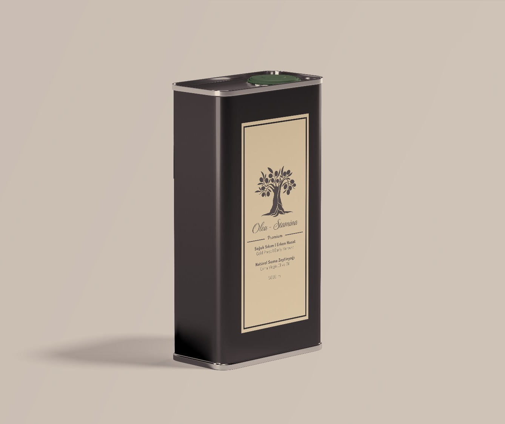
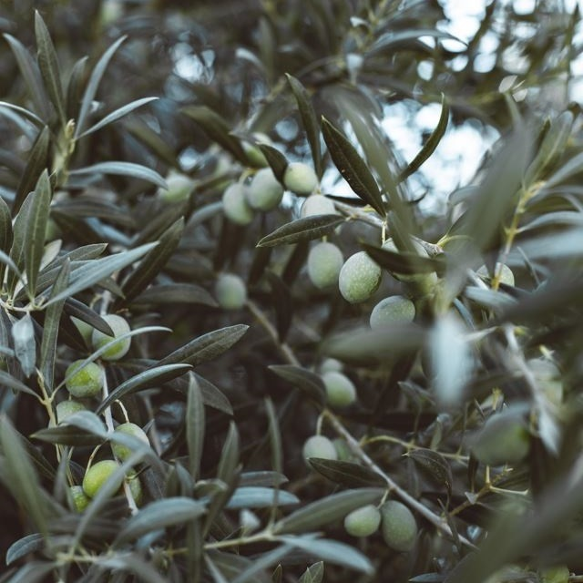
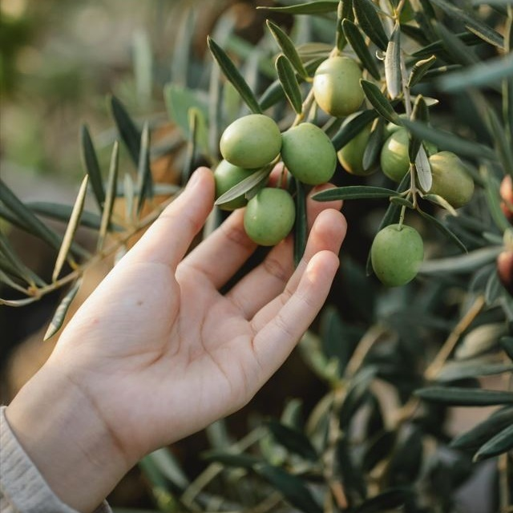
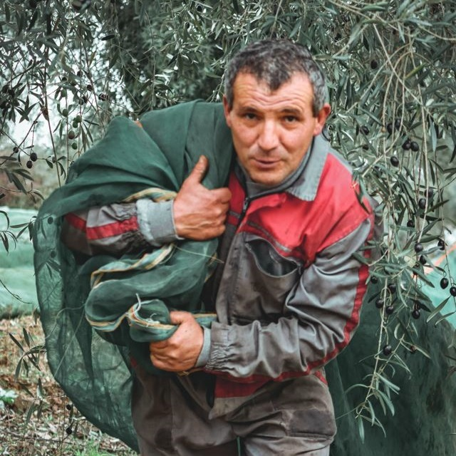
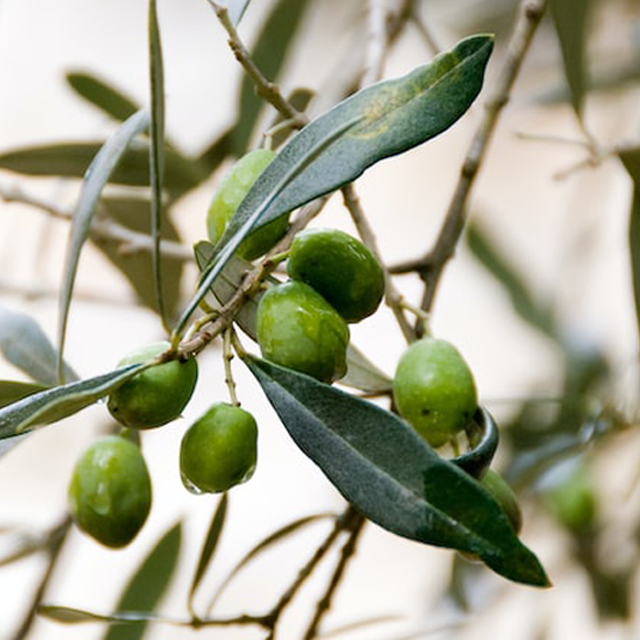
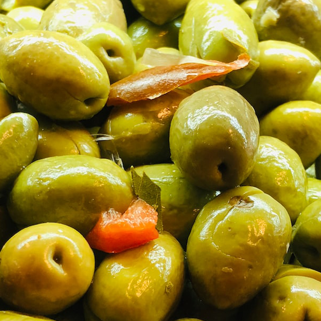
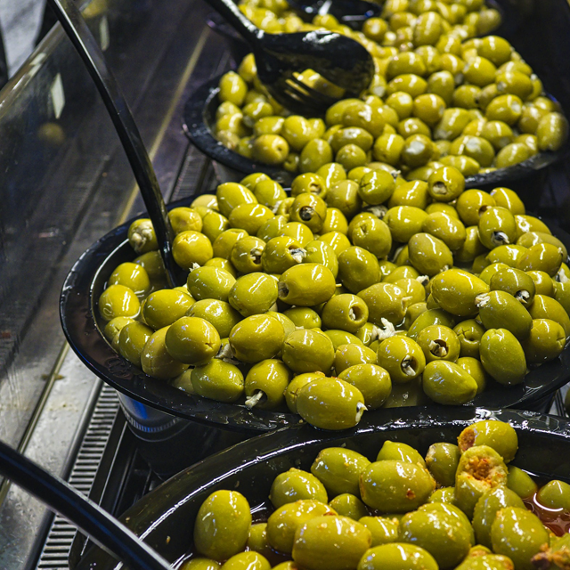
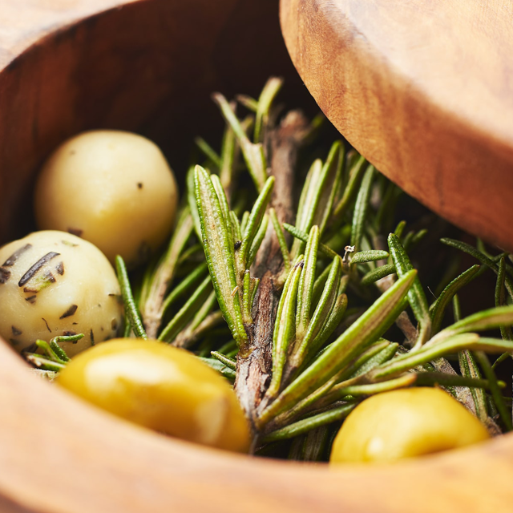
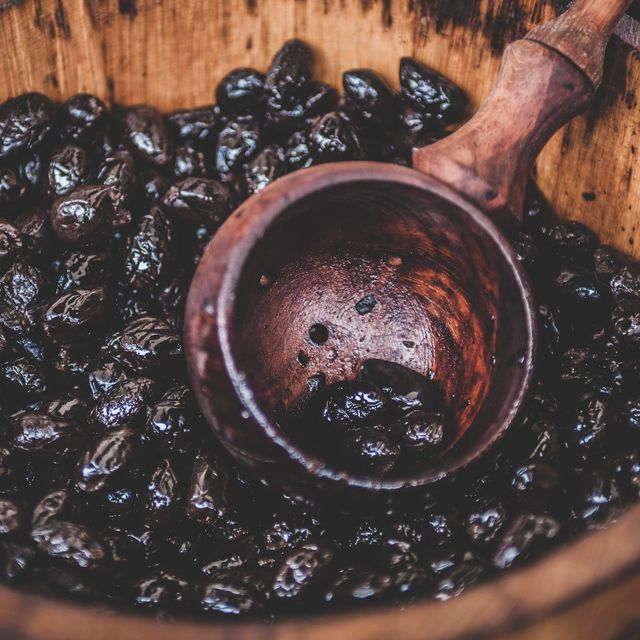

Polifenol Nedir?
Bitkilerde doğal olarak bulunan, güçlü antioksidan etkili organik bileşikler. Erken hasat ve soğuk sıkımla korunan yüksek polifenol, zeytinyağının değerini belirler.
Daha fazlaErken Hasat · Soğuk Sıkım · Natürel Sızma
Manisa Saruhanlı ve İzmir Urla bahçelerimizde, ekibimizin kendi elleriyle yetiştirdiği zeytinlerden monovaryetal olarak üretilen, sınırlı sayıda butik natürel sızma zeytinyağı.

Biz Kimiz?
Olea Stamina; pandemi günlerinde, farklı disiplinlerden gelen bir ekibin "iyi bir yağ nasıl olur?" sorusuyla başlattığı butik bir zeytinyağı projesidir.
Doğanın bize emanet ettiği zeytin ağaçlarına kimyasal etken madde uygulamıyor, bahçelerimizdeki zararlılarla yalnızca biyolojik yöntemler ve doğal gübre ile mücadele ediyoruz. Ağaçlarımızın sağlığı, şişeye dolacak yağın karakterini belirleyen ilk şart.
Manisa Saruhanlı'nın Pınarbaşı köyünde Domat, Uslu, Trilye; İzmir Urla'nın Camiatik mevkiinde Gemlik çeşitlerimiz bulunuyor. Her çeşit, kendi karakterini koruyabilsin diye ayrı ayrı sıkılıyor — monovaryetal şişeleme bizim için olmazsa olmaz.
TanışalımZeytin ağacının gücü, toprağın derinliklerine uzanan güçlü köklerindedir. Urla ve Saruhanlı'nın kireçli, geçirgen ve zengin toprak yapısı, Olea Stamina ağaçlarının staminasını ve karakteristik lezzetini besleyen en temel kaynaktır.
Ağaçlarımıza kimyasal gübre veya sentetik böcek ilaçları uygulamıyoruz. Baharın gelişiyle filizlenen dallarımız, tamamen biyolojik mücadele ve organik zeytin posasından elde edilen doğal kompostlar ile beslenerek sağlıklı bir şekilde uzar.
Sonbaharın başlarında, zeytinlerimiz henüz yeşilken ve polifenol değerleri zirvedeyken özenle elle toplanır. Dallarımızın meyveye durması, doğanın en değerli hediyesi olan yüksek antioksidanlı "sıvı altın"ın habercisidir.
Zeytin ağacı ölmez, döngüsü sonsuzdur. Doğru hasat yöntemleri ve sevgi dolu bir bakımla, Stamina gücü nesiller boyu sofralarımıza taşınmaya devam eder. Her şişe Olea Stamina, bu ölümsüz döngünün bir parçasıdır.
Ürünlerimiz
500 ml siyah cam şişeden 5 litrelik tenekemize kadar — her ambalaj aynı titiz üretimin parçası.
İtalyan koyu cam · ışık geçirmez · 500 mL
Sipariş BilgisiPremium teneke · UV korumalı · 1 L
Sipariş BilgisiPremium teneke · UV korumalı · 2 L
Sipariş BilgisiPremium teneke · UV korumalı · 5 L
Sipariş BilgisiGaleri








Üretim Süreci
Polifenol ve aromayı kayıpsız korumak için sıkı bir disiplin: erken hasat, toprakla temas yok, 18–22°C aralığında soğuk sıkım.